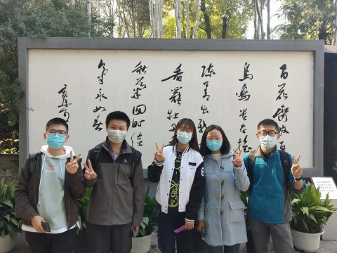
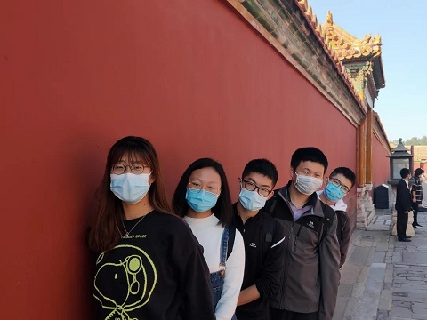
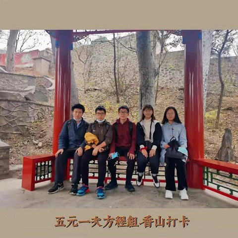

外出游览记

梅兰芳故居—郭沫若故居—护国寺小吃街—故宫

那是一个风和日丽的清晨，全员无一人迟到并于早上8点在学校东门集合完毕后，
乘坐地铁向护国寺小吃街进发，到达目的地后我们首先游览了梅兰芳故居，
感受一代京剧名伶风情优雅舞台后朴素的生活气息～

之后，我们一行六个人来到了郭沫若故居，在这里我们了解到了郭沫若先生在此生活时的点点滴滴，
使我们对郭沫若先生的了解更为全面立体。

恰逢故宫600周年大展，风和日丽，人声鼎沸，
我们得以一览其风貌，实为幸事！
可惜学姐年老体迈，不过两个小时便瘫坐于地，不得起身，原地等待小四元先行参观。
香山
